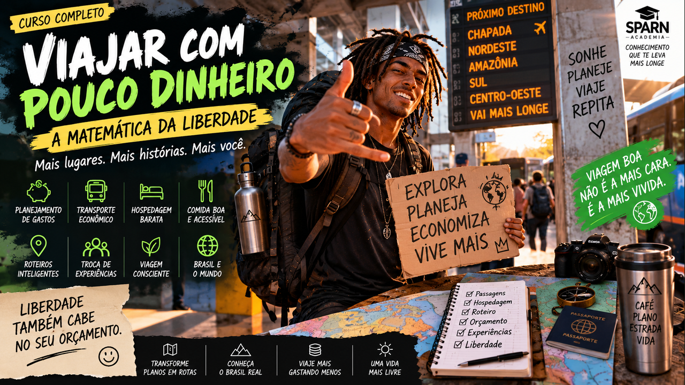
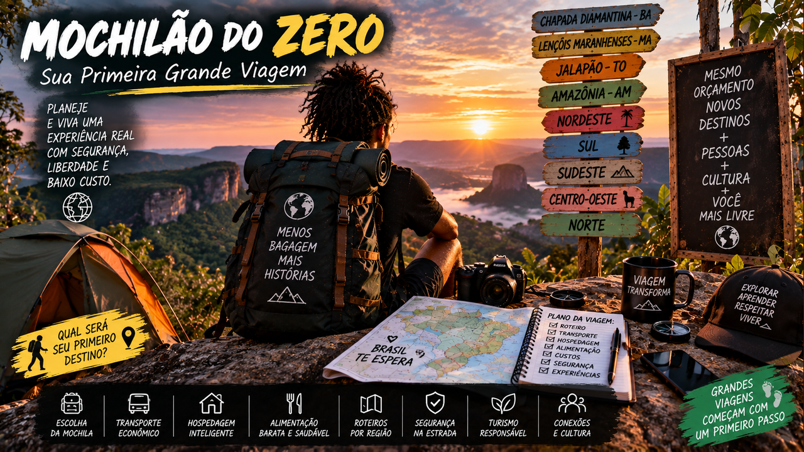
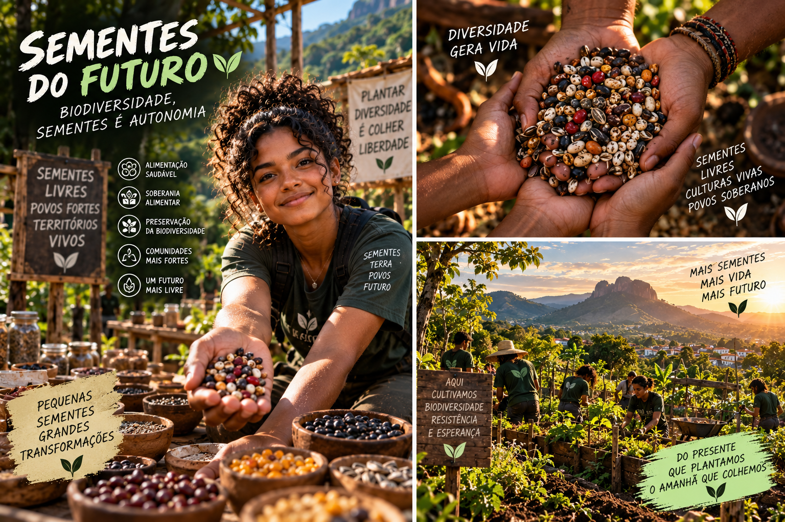
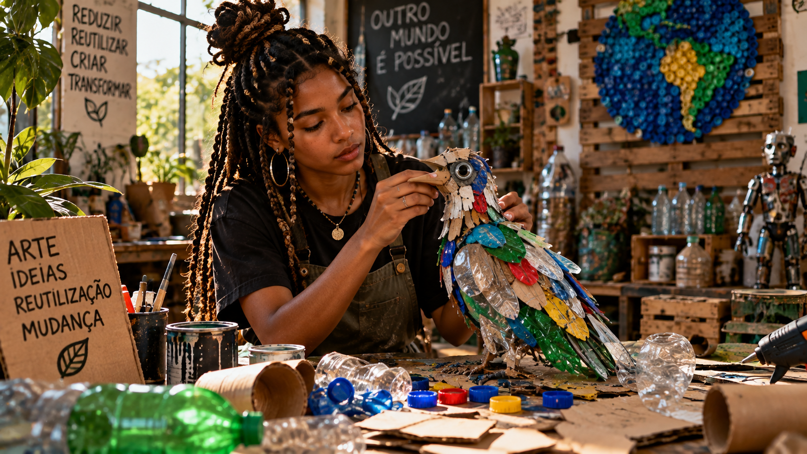
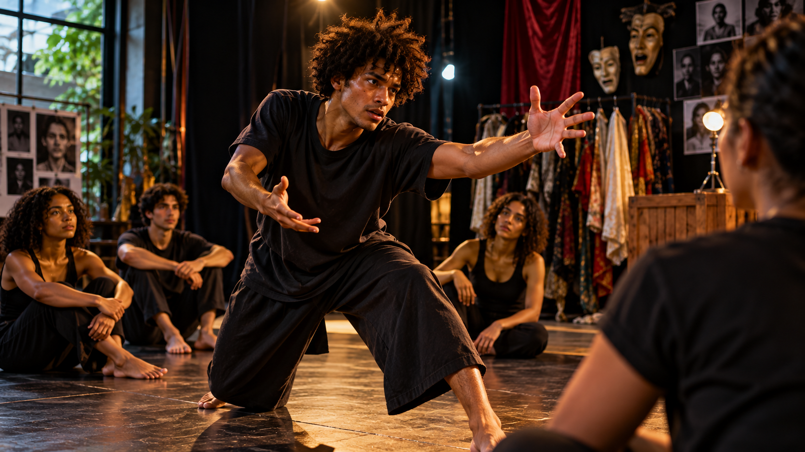

Mente Milionária de Verdade
Troque a fantasia do enriquecimento rápido por hábitos consistentes, decisões conscientes e construção paciente de liberdade.
Cursos do Instituto TECA, ferramentas práticas e uma biblioteca global para aprender, criar, trabalhar e acessar novas possibilidades.
Cursos, oportunidades e caminhos para avançar.
Formações do Instituto TECA organizadas por área, com conteúdo aplicado, exercícios, projetos e ferramentas para construir novos caminhos.
Clique em uma faixa para explorar os cursos.
Troque a fantasia do enriquecimento rápido por hábitos consistentes, decisões conscientes e construção paciente de liberdade.
Desenvolva pensamento crítico, criatividade, comunicação e colaboração com inteligência artificial.
Crie três caminhos profissionais, identifique suas lacunas e desenvolva um projeto real de portfólio.
Estamos organizando cursos de universidades, governos e instituições do mundo inteiro por área, idioma, duração e tipo de certificado.
Inteligência artificial, futuro, criação digital e novas formas de trabalho.
Use luz, enquadramento, cor e narrativa para transformar cenas cotidianas em imagens com intenção e identidade.
 28+Nômade Digital
28+Nômade DigitalPlaneje a busca por emprego, escolha cidades, encontre voluntariados confiáveis e construa renda remota em euro ou dólar.
Planeje a busca por emprego, escolha cidades, encontre voluntariados confiáveis e construa renda remota em euro ou dólar.
 12+Construa Seu Trabalho do Futuro
12+Construa Seu Trabalho do FuturoTransforme autoconhecimento e tendências em hipóteses de carreira, experimentos reais, portfólio, rede e um plano executável.
Fortaleça pensamento crítico, criatividade, empatia, comunicação, ética e adaptabilidade para gerar valor em um mundo com IA.
Entenda como robôs percebem, decidem e agem, conheça as profissões da robótica e planeje sua entrada segura nesse mercado.
Use ferramentas generativas como instrumentos criativos, desenvolva linguagem própria e construa uma obra multimídia com autoria, método e responsabilidade.
 08+Trabalhando com Agentes de IA
08+Trabalhando com Agentes de IAAprenda a desenhar, coordenar e supervisionar equipes de agentes que pesquisam, analisam, produzem e verificam tarefas.
 07+Profissões do Futuro
07+Profissões do FuturoEntenda as forças que estão transformando as profissões, descubra áreas em crescimento e crie um plano pessoal de carreira para os próximos 90 dias.
 03+IA para Artistas
03+IA para ArtistasCriação, pesquisa, projetos, produção, comunicação e automação com direção humana, ética e proteção de direitos.
Conhecimento para autonomia, finanças, sustentabilidade, mobilidade e vida.
Planeje a busca por emprego, escolha cidades, encontre voluntariados confiáveis e construa renda remota em euro ou dólar.

32+Viajar com Pouco DinheiroPlaneje a busca por emprego, escolha cidades, encontre voluntariados confiáveis e construa renda remota em euro ou dólar.
 31+Saúde na Estrada
31+Saúde na EstradaPlaneje a busca por emprego, escolha cidades, encontre voluntariados confiáveis e construa renda remota em euro ou dólar.

30+Mochilão do ZeroPlaneje a busca por emprego, escolha cidades, encontre voluntariados confiáveis e construa renda remota em euro ou dólar.
 29+Rotas pelo Brasil
29+Rotas pelo BrasilPlaneje a busca por emprego, escolha cidades, encontre voluntariados confiáveis e construa renda remota em euro ou dólar.

26+Sementes do FuturoAprenda reprodução, seleção, conservação, agrobiodiversidade e redes comunitárias para manter sementes e conhecimento vivos.
 25+Solo Vivo
25+Solo VivoEntenda biologia, matéria orgânica, água, estrutura e diagnóstico para construir fertilidade e regenerar a base da produção.
 24+Guardiões das Nascentes
24+Guardiões das NascentesAprenda a compreender nascentes, diagnosticar riscos, recuperar vegetação e organizar monitoramento comunitário da água.
Aprenda a diagnosticar áreas, escolher métodos e espécies, organizar mutirões e acompanhar a recuperação ecológica com participação jovem.
 22+Agrofloresta
22+AgroflorestaAprenda sucessão, estratos, solo vivo, biomassa, desenho e manejo para produzir alimentos enquanto recupera funções ecológicas.
Entenda custos, preço, mercado, comercialização, caixa e reinvestimento para transformar produção agrícola em renda sustentável.
Aprenda a começar uma horta possível em vasos, canteiros ou pequenos espaços, cuidando de solo, água, plantio, manutenção e colheita.
 18+Economia de Verdade
18+Economia de VerdadeAprenda a interpretar escolhas, mercados, preços, produção, indicadores, crescimento e evidências com raciocínio econômico.
Entenda sua vida bancária, use crédito com consciência e reconheça golpes antes de confirmar.
Quanto guardar, onde deixar, quando usar e como começar mesmo ganhando pouco.
Desenvolva disciplina, paciência, responsabilidade e visão de longo prazo para construir estabilidade, patrimônio e liberdade.
 13+Dinheiro sem Mistério
13+Dinheiro sem MistérioEntenda renda, gastos, escolhas, orçamento, metas e hábitos para começar a vida adulta com autonomia e responsabilidade.
Produção cultural, projetos, identidade, território e visibilidade.
Reconecte alimento, solo, água, território e economia local e transforme conhecimento em um primeiro ciclo de cultivo possível.
 06+Produção Cultural na Prática
06+Produção Cultural na PráticaPlaneje equipes, orçamento, infraestrutura, acessibilidade, segurança e operação para realizar eventos e ações culturais com qualidade.
 05+Viver de Arte
05+Viver de ArteTransforme talento e repertório em uma atividade sustentável com receitas diversificadas, preços justos, organização financeira e relações profissionais.
Posicione seu trabalho, crie conteúdo com identidade, forme comunidade e transforme atenção em presença, público e oportunidades reais.
 02+Da Ideia ao Projeto
02+Da Ideia ao ProjetoTransforme uma intuição criativa em conceito, objetivos, experiência, impacto, comunicação e dossiê profissional.
 01+Editais sem Mistério
01+Editais sem MistérioDa leitura estratégica do edital à escrita, orçamento, inscrição, execução e prestação de contas de um projeto cultural.
Criação, expressão, técnica e prática artística.
Aprenda a pensar em três dimensões, modelar materiais e desenvolver forma, volume, personagem e expressão escultórica.
Experimente cor, gesto, matéria e diferentes técnicas para criar uma primeira série de pinturas com linguagem própria.

40+Arte com Materiais ReutilizadosTransforme materiais descartados em matéria-prima para objetos, obras e produtos criativos com identidade e valor.

39+Teatro & Expressão CorporalExplore presença, improvisação, voz, movimento e criação de cena para ampliar expressão, comunicação e confiança.
Construa fundamentos de observação, forma, luz e composição até desenvolver personagens, imagens e uma linguagem visual própria.
Aprenda nós fundamentais, composição, acabamento e criação de peças decorativas e utilitárias com fibras e cordões.
Descubra a delicadeza da construção em fios, padrões, curvas e detalhes e transforme técnica artesanal em linguagem contemporânea.
Respiração, apoio, afinação, timbre, interpretação e prática para conhecer e desenvolver sua própria voz.